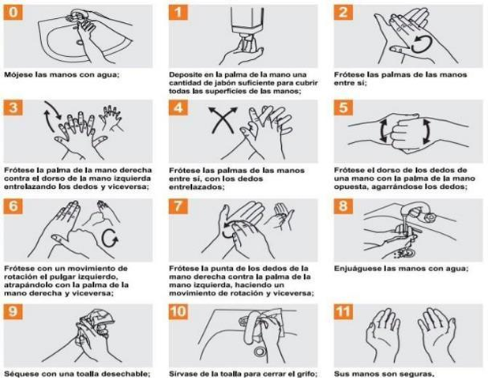
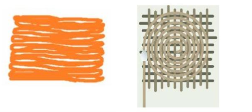
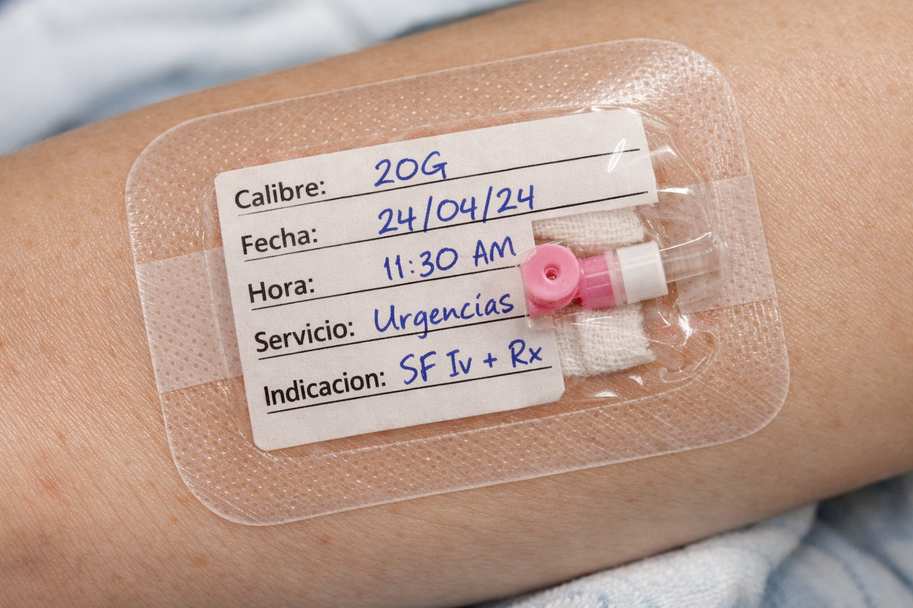

Antisepsia, Higiene de Manos y Protocolo de Seguridad
Procedimiento estandarizado para garantizar que sus manos sean seguras antes del contacto con el paciente.

Recordatorio Crítico: El uso de guantes no reemplaza la higiene de manos.
Técnica de fricción (Back and Forth o Técnica de rejilla):

Apósito transparente que permita visualizar el sitio. Debe incluir: calibre, fecha, hora, servicio e indicación.
| Paciente | Volumen Recomendado |
|---|---|
| Neonato | 1-3 ml |
| Pediátrico | 3-5 ml |
| Adulto | 5-10 ml |
Crítico: Lavar antes y después de cada medicamento para eliminar fibrina y bacterias.